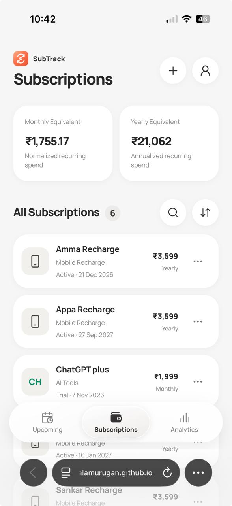
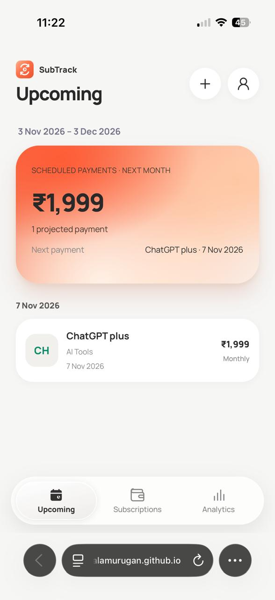
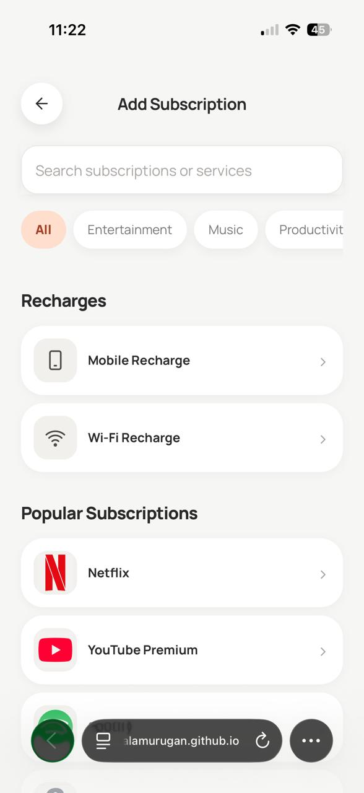
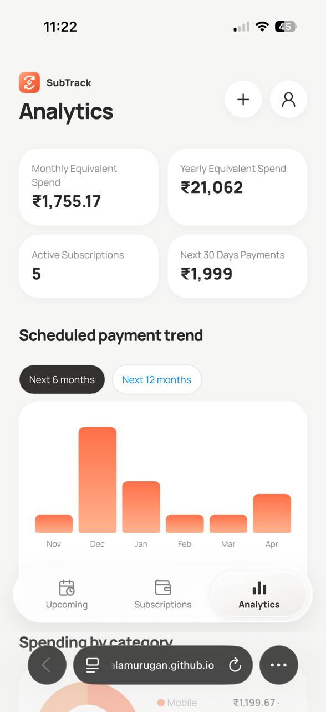

Scattered dates
Renewals are spread across different services.
SUBTRACK / INDEPENDENT PRODUCT / CASE STUDY
A mobile-first subscription tracker built to make renewals, recurring expenses and billing cycles easier to understand.

Managing mobile recharges, internet plans, streaming services and software subscriptions meant tracking different renewal dates, amounts and billing cycles. I wanted one simple place to see what was due and understand my recurring spend.
SubTrack began as a self-initiated product concept and became a working, mobile-first Progressive Web App. I defined the experience, designed the interface and used AI-assisted coding to implement and refine it.
Each subscription has its own price and billing frequency. Without a consolidated view, it is easy to overlook an approaching renewal or underestimate total recurring expenses.
How might I make multiple subscriptions easy to track, understand and manage without adding another paid subscription?
Renewals are spread across different services.
Monthly and annual commitments are hard to compare.
Not every payment renews monthly.
I explored existing subscription management products and found that some free tiers limited subscriptions or reserved features for paid plans. For my needs, a lightweight tracker with direct access to renewal dates, subscription details and spending summaries was a better fit.
This was personal competitive exploration, not a formal market study or externally validated research program.
My responsibility was to define what the product should do, evaluate generated implementations, identify interaction and calculation issues, and iterate until the experience matched the intended behavior. AI supported code creation; it did not replace the product decisions or manual review.
Renewal dates and amounts
Browse, search, add and edit
Spending visibility
The bottom navigation keeps the three main tasks consistently accessible, while secondary actions remain within their relevant screens.
A dedicated view groups approaching renewals with payment amounts and dates, supporting advance planning.
Subscription cards, search, sorting and details support everyday organization and updates.
Weekly, biweekly, monthly, quarterly, semiannual, yearly and custom intervals accommodate different plans.
Monthly-equivalent and annualized summaries make spending easier to compare across billing cycles.
Reminder preferences are part of subscription setup; reliable background notification delivery is not claimed.
Active plans, trials and cancelled subscriptions need clear visual treatment and appropriate management actions.
Four real application screens show the core experience: subscription management, upcoming renewals, service discovery, and spending analytics.
The screen prioritizes recurring spending, then shows individual plan names, renewal context and prices. Search, sorting and navigation remain accessible without overloading each card.

Projected payments, the next renewal date, and an easy-to-scan upcoming payment card.

Search and category filters help people find common services and recharge options.

Recurring spend summaries and a scheduled payment chart make future costs more visible.
Refined selected states, icon consistency and spacing for mobile use.
Reworked billing-cycle choices, reminder preferences and required fields.
Revisited upcoming payment periods and monthly/yearly equivalent spending calculations.
Adjusted empty states, scrolling behavior and PWA presentation.
These are documented design and implementation iterations, not measured usability improvements. Earlier screen versions are not presented as before/after evidence without matching assets.
SubTrack is a frontend-only PWA built with HTML, CSS and JavaScript. It stores subscription data in browser LocalStorage, so the experience works without a backend or account system.
Subscription organization, renewal tracking, spending summaries, local persistence and installable PWA behavior.
Authentication, cloud database, cross-device account sync, payment processing or automatic subscription payments.
LocalStorage data can differ between browsers or installations. This is an architectural limitation, not a synchronized account experience.
The result is a working product I can use and continue improving. Building it sharpened my understanding of how design decisions connect to application state, recurring-date logic, edge cases and frontend limitations.
SubTrack demonstrates independent product ideation, mobile-first interaction design, AI-assisted implementation and iterative quality review. I have not claimed adoption figures, conversion improvements or formal research results.
Try SubTrackExplore other projects